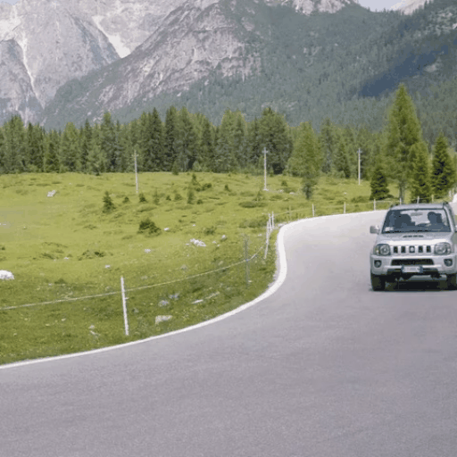

Given an image diffusion model (IDM) for a specific image synthesis task, and a text-to-video diffusion foundation model (VDM), our model can perform training-free video synthesis, by bridging IDM and VDM.


Abstract
Diffusion models have made tremendous progress in text-driven image and video generation. Now text-to-image foundation models are widely applied to various downstream image synthesis tasks, such as controllable image generation and image editing, while downstream video synthesis tasks are less explored for several reasons. First, it requires huge memory and compute overhead to train a video generation foundation model. Even with video foundation models, additional costly training is still required for downstream video synthesis tasks. Second, although some works extend image diffusion models into videos in a training-free manner, temporal consistency cannot be well kept. Finally, these adaption methods are specifically designed for one task and fail to generalize to different downstream video synthesis tasks. To mitigate these issues, we propose a training-free general-purpose video synthesis framework, coined as BIVDiff, via bridging specific image diffusion models and general text-to-video foundation diffusion models. Specifically, we first use an image diffusion model (like ControlNet, Instruct Pix2Pix) for frame-wise video generation, then perform Mixed Inversion on the generated video, and finally input the inverted latents into the video diffusion model for temporal smoothing. Decoupling image and video models enables flexible image model selection for different purposes, which endows the framework with strong task generalization and high efficiency. To validate the effectiveness and general use of BIVDiff, we perform a wide range of video generation tasks, including controllable video generation video editing, video inpainting and outpainting.
Method
BIVDiff pipeline. Our framework consists of three components, including Frame-wise Video Generation, Mixed Inversion, and Video Temporal Smoothing. We first use the image diffusion model to do frame-wise video generation, then perform Mixed Inversion on the generated video, and finally input the inverted latents into the video diffusion model for video temporal smoothing.
Results
(I) Controllable Video Generation
(i) ControlNet (IDM) + VidRD (VDM)
| Depth | Canny | Pose | ||
 |
||||
 |
 |
|||
| "A person on a motorcycle does a burnout on a frozen lake" | "A silver jeep car is moving on the winding forest road" | "An astronaut moonwalks on the moon" |
(ii) T2I-Adapter (IDM) + VidRD (VDM)
 |
→ |  |
 |
→ |
| "A red car moves in front of buildings" | "Iron Man moonwalks on the beach" |
(iii) ControlNet (IDM) + ZeroScope (VDM)
| Depth | Canny | Pose | ||
 |
 |
 |
||
 |
||||
| "A brown spotted cow is walking in heavy rain" | "A bear walking through a snow mountain" | "Iron Man moonwalks in the desert" |
(II) Video Editing
(i) Instruct Pix2Pix (IDM) + VidRD (VDM)
| Source Video | Style Transfer | Replace Object | Replace Background |
 |
 |
 |
|
| "A man is moonwalking" | "Make it Minecraft" | "Replace the man with Spider Man" | "Change the background to stadium" |
(ii) Prompt2Prompt (IDM) + VidRD (VDM)
| Source Video | Attention Replace | Attention Refine | ||||
 |
 |
 |
||||
| "A car is moving on the road" | "A |
"A car is moving on the road at sunset" | "A car is moving on the road in the forest" | "A white car is moving on the road" |
(iii) Instruct Pix2Pix (IDM) + ZeroScope (VDM)
 |
→ | → |
| "Replace the man with a little boy" | "Make it minecraft style" |
(III) Video Inpainting
Stable Diffusion Inpainting (IDM) + VidRD (VDM)
 |
 |
| Erase Object: "" |
 |
 |
 |
| Replace Object: "A sports car is moving on the road" |
(IV) Video Outpainting
Stable Diffusion Inpainting (IDM) + VidRD (VDM)
 |
 |
 |
Comparison
(I) Controllable Video Generation
| "An army green jeep car is moving on the winding forest road" |
 |
||||
| Source Video | ControlNet | Text2Video-Zero | ControlVideo | BIVDiff (ours) |
(II) Video Editing
| "Replace the man with Spider Man" |
 |
||||
| Source Video | Instruct Pix2Pix | Text2Video-Zero | Tune-A-Video | BIVDiff (ours) |
Ablation
(I) Framework Design
| "A striking mallard floats effortlessly on the sparkling pond" |
| Source Video | IDM (ControlNet) | VDM (VidRD) | IDM and VDM Alternate | IDM and VDM Fuse |
IDM and VDM Sequential (BIVDiff) |
(II) Mixing Ratio in Mixed Inversion
| "A |
 |
||||||
| Source Video | Prompt2Prompt | BIVDiff (α=0) | BIVDiff (α=0.1) | BIVDiff (α=0.25) | BIVDiff (α=0.5) | BIVDiff (α=1.0) |
(III) Effects of Video Temporal Smoothing
| Input |  |
 |
 | ||||
| IDM | |||||||
| BIVDiff (ours) |
 |
|
|
||||
| Video Inpainting with Stable Diffusion Inpainting |
Controllable Video Generation with ControlNet |
Video Editing with Insruct Pix2Pix |
Video Editing with Prompt2Prompt |